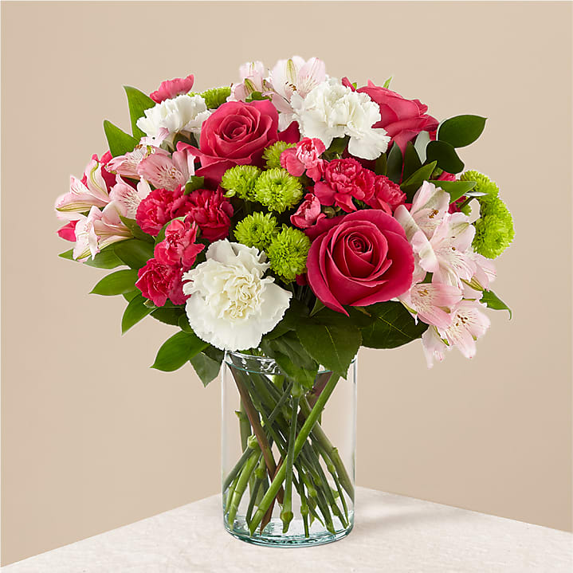
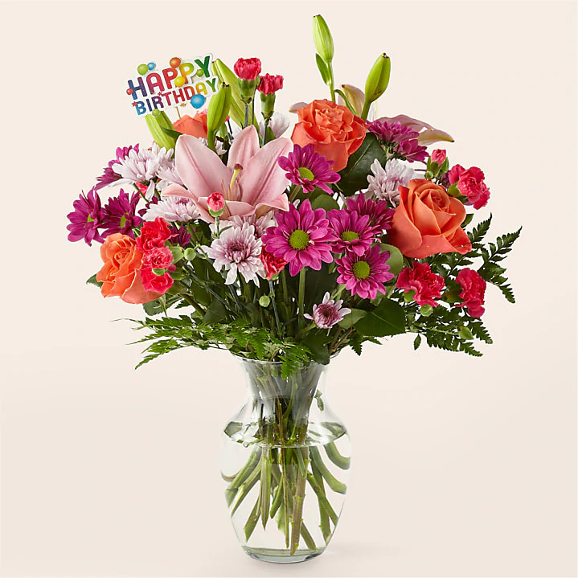
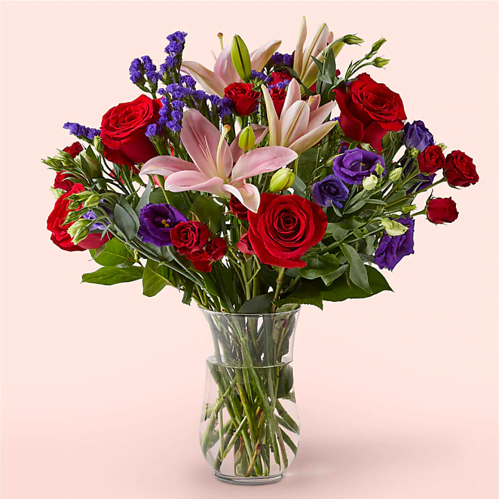
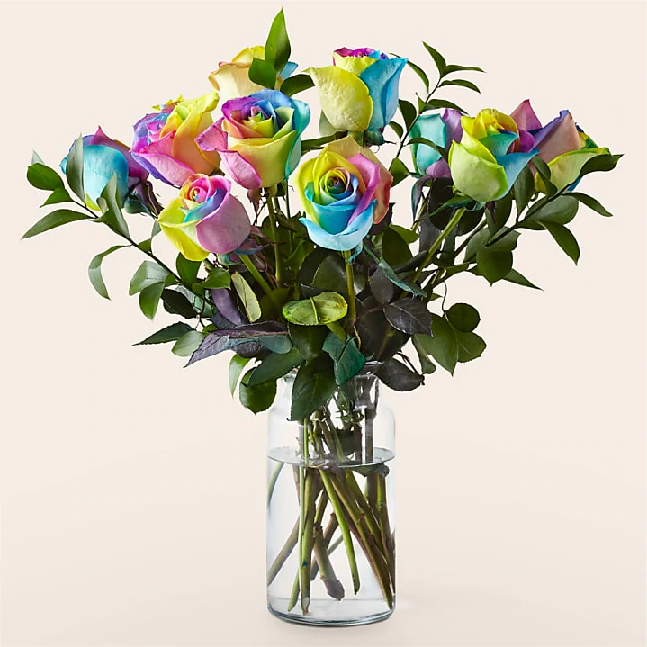
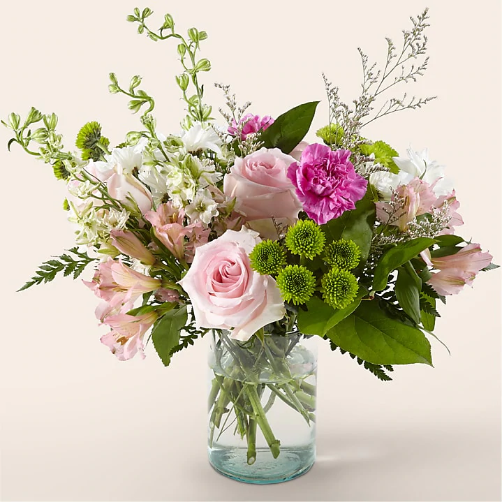

Anniversary Flowers
Let Proflowers help you make this year’s anniversary unforgettable. Show that special someone how much you care by ordering an anniversary flowers delivery that’s brought right to their doorstep!
Anniversary Flowers FAQs
What anniversary flowers should I send?
When it comes to anniversary flowers, you can never go wrong with a rose delivery. We offer a host of elegant rose bouquets and roses in all different colors, including pink roses, yellow roses, white roses, and even tie-dyed roses.
However, you don't have to go down this traditional route. Ultimately, you want to get flowers that your partner will enjoy. And here at Proflowers, we have plenty of other options in addition to classic roses. Choose from anniversary bouquets and arrangements packed with lilies, alstroemerias, and more when you shop our collection.
What color flowers for an anniversary should I send?
The color of the flowers depends on the person you're giving them to. Pink and red are the two colors most often associated with romance, but you can choose from all sorts of different colors. An arrangement with white flowers can look sleek and elegant, while more colorful flowers - like sunflowers or daisies, for instance - can inspire feelings of warmth and positivity in your significant other.
Consider the meanings behind flower colors when making your selection:
Red symbolizes passion and romance
White conveys innocence and purity
Yellow represents happiness and joy
Pink is associated with devotion
Lavender or lilac is said to convey “love at first sight”
Whether it's your first anniversary or your 30th, you can celebrate the momentous occasion with a special flower delivery that is sure to delight.
What else should I send with anniversary flowers?
At Proflowers, we offer more than just beautiful floral arrangements. While we are renowned for spectacular birthday flowers, sympathy flowers, and gorgeous bouquets for anniversaries, we also have a wide variety of gifts for honoring life’s special moments.
Some of our most popular anniversary gifts include:
Godiva chocolates
Spa gift baskets
Gourmet food gift baskets
Chocolate covered strawberries
Potted plants
Love flowers and gifts are always a winning combination. Pair any of these gifts with some fresh happy anniversary flowers to make the day a special one!
What Are the Best Anniversary Flowers to Send?
Any floral gift that comes from the heart will be appreciated by your loved one. If you need some inspiration, just take a look at some of our best-selling anniversary flower bouquets and choose the one you think your partner will love the most!
On-Time Anniversary Flower Delivery
You can rest assured knowing your anniversary flowers will be delivered on time. We work with trusted local florists in your community who take great care to safely package your flowers and get them to the intended recipient while they’re still fresh. Above all else, we pride ourselves on our customer service and even offer a satisfaction guarantee — if you’re not satisfied with your anniversary flower order, just let us know and we’ll replace it or refund your money.
Don’t fret if this important day snuck up on you! With our same day flower delivery, you can rest assured your spouse will receive their anniversary bouquet on time.
Flowers for Anniversary Milestones
If your anniversary is coming up, you can send an impressive floral arrangement to mark the occasion. Just as there are specific gifts tied to each anniversary year, there are also specific blooms.
1st Anniversary: Carnations
2nd Anniversary: Cosmos
3rd Anniversary: Sunflowers
4th Anniversary: Geraniums
5th Anniversary: Daisies
6th Anniversary: Calla Lilies
7th Anniversary: Freesias
8th Anniversary: Clematis
9th Anniversary: Poppies
10th Anniversary: Daffodils
15th Anniversary: Roses
20th Anniversary: Asters
25th Anniversary: Irises
30th Anniversary: Lilies
40th Anniversary: Gladioli
50th Anniversary: Violets and yellow roses
No matter which anniversary milestone you’re celebrating, flowers are a great way to express your love, admiration, and devotion. Show your spouse just how much you care by sending a magnificent anniversary bouquet accompanied by a personal love note. Shop all flowers today!

60000MMK

60000MMK

60000MMK

60000MMK

60000MMK

60000MMK

60000MMK

60000MMK

60000MMK